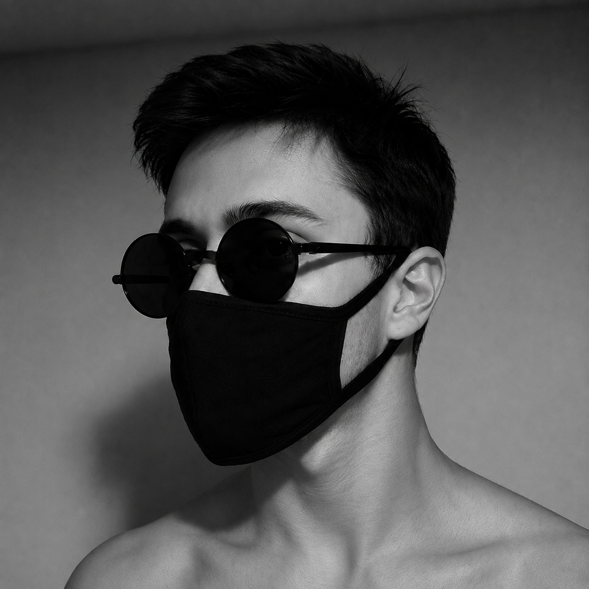

AkperOS
Kendi Linux dağıtımım — CachyOS çekirdeği, KDE Plasma masaüstü, Calamares kurulumcu, Türkçe/İngilizce destek.

Yazılım geliştirici, müzik yapımcısı ve indie oyun geliştiricisi.
Yazılım yazmayı, müzik yapmayı ve oyun geliştirmeyi seviyorum. ArchGate İndie Oyun Takımı'nda yer alıyorum. Sistem programlama, yapay zeka ve açık kaynak üzerine çalışıyor; kendi Linux dağıtımım ve dil modellerim gibi projeler geliştiriyorum.
Kendi Linux dağıtımım — CachyOS çekirdeği, KDE Plasma masaüstü, Calamares kurulumcu, Türkçe/İngilizce destek.
512 byte'lık, BIOS önyüklemeli x86 bootloader — menülü ve disket imajına yazılabilir.
Linux için hafif init sistemi (PID 1). Servis yönetimi, bağımlılık çözümleme ve cgroup kaynak limitleri.
Modüler init sistemi için servis süpervizörü; restart politikaları, loglama ve Unix soket kontrollü.
Sekme tabanlı X11 tiling pencere yöneticisi — her pencere bir sekme, workspace'ler ve split modu.
İçine LLM gömülü özel bir Linux — llama.cpp ve Qwen modeli taşıyan bir "AI OS" denemesi.
Türkçe/kod odaklı LLM. Qwen2.5-Coder-3B tabanına QLoRA ile ince ayar, GGUF'a quantize ve Ollama'ya kurulum.
Sıfırdan eğitilmiş ~125M parametreli Türkçe dil modeli. Tokenizer'dan eğitime kadar her şey elde yapıldı.
Unsloth ile Llama-3.2-3B tabanlı Türkçe LLM QLoRA ince ayarı — 6GB VRAM'e optimize edilmiş.
Tamamen yerel AI sohbet asistanı. CLI + GUI, streaming yanıtlar, SQLite tabanlı vektör hafıza (RAG) ve kişilik profilleri.
PySide6 ile Türkçe, kişiselleştirilebilir grafik dosya yöneticisi. Önizleme, sürükle-bırak, ZIP ve tema desteği.
PyQt6 + QtWebEngine ile sekmeli web tarayıcı. Gizli gezinti ve koyu/açık tema modları.
Go ile yazılmış, her Linux dağıtımında çalışan evrensel paket yöneticisi CLI. SHA-256 doğrulamalı.
ark için sunucusuz paket kayıt defteri ve GitHub Pages'te yayınlanan paket mağazası.
ark paket mağazasının tek sayfalık web arayüzü — arama, indirme ve kurulum komutları.
İnternetsiz çalışan yerel paket yöneticisi — .akpkg arşivleriyle paket kurulum, kaldırma ve güncelleme.
Tarayıcıda sürükle-bırak bloklarla HTML site oluşturan görsel web editörü.
Webcam'den el takibi yapan artırılmış gerçeklik kılıç uygulaması (OpenCV + MediaPipe).
Windows 11'i gereksiz yazılımlardan arındıran debloat betikleri ve otomatik kurulum ISO'su altyapısı.
İçinde yer aldığım indie oyun takımı — birlikte oyun geliştiriyoruz.
Minecraft 1.20.1 için Fabric korku modu — oyuncuyu izleyen ve yazılar bırakan özel bir varlık.
Karanlıkta oyuncuyu izleyen bir şey içeren "Broken Script" tarzı Minecraft korku modu.
Baldi's Basics için mod koleksiyonu ve tek tıkla kurulum yapan mod yükleyici.
Godot 4.7 ile yapılmış platform oyunu — paralar, düşmanlar ve zıplama mekanikleri.
Unity 6 ile geliştirilen temizlik temalı oyun projesi.
Terminalde ders ve quiz içeren interaktif Rust öğrenme programı.
Yaptığım bazı parçaları buradan dinleyebilirsin.
Bana ulaşmak istersen aşağıdaki kanallardan beni bulabilirsin.